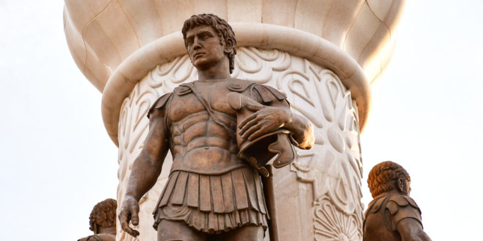

Aristóteles nació en 384 a. C. o 383 a. C., durante el primer año de la olimpiada XCIX,89101112 en la ciudad de Estagira, la actual Stavros, (razón por la cual se lo apodó el Estagirita),5 no lejos del actual Monte Athos, en la península Calcídica, entonces perteneciente al Reino de Macedonia (actual región de Macedonia de Grecia).13 Su padre, Nicómaco, pertenecía a la corporación de los asclepiadeos, es decir, que profesaba la medicina, y fue médico del rey Amintas III de Macedonia,14 hecho que explica su relación con la corte real de Macedonia, que tendría una importante influencia en su vida; y su madre, Festia, era oriunda de Calcis y también estaba vinculada a los asclepiadeos.13 En la época del rey Arquelao I de Macedonia, al ser su padre médico del rey Amintas III de Macedonia, ambos residieron en Pella, y Aristóteles no pudo permanecer mucho tiempo en aquel lugar ya que sus padres murieron cuando él era aún muy joven, y se trasladó probablemente a Atarneo.13 En 367 a. C., cuando Aristóteles tenía 17 años, su padre murió, y se hizo cargo de él su tutor Proxeno de Atarneo,13 que lo envió a Atenas, por entonces un importante centro intelectual del mundo griego, para que estudiase en la Academia de Platón.15 Allí permaneció por veinte años.15
Cuando Alejandro murió en 323 a. C., es probable que Atenas se volviera un lugar incómodo para los macedonios, especialmente para quienes tenían las conexiones de Aristóteles.1415 Según se cuenta, declaró que "no veía razón para dejar que Atenas pecara dos veces contra la filosofía" (clara alusión a la condena de Sócrates). Aristóteles dejó Atenas y se estableció a Calcis, en la isla de Eubea, donde murió extrañamente al año siguiente a la edad de 61 ó 62 años, en 322 a. C., por una enfermedad de los órganos digestivos.141526 Su testamento fue conservado por Diógenes Laercio.29